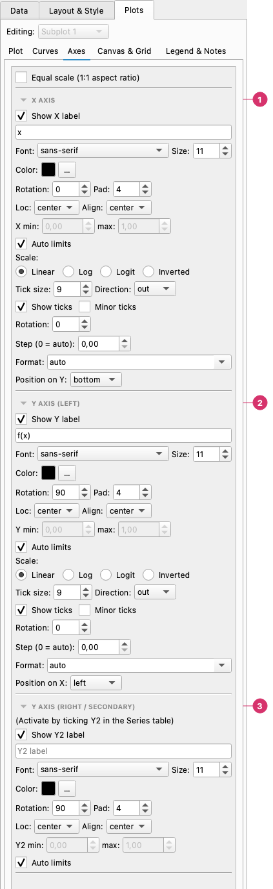
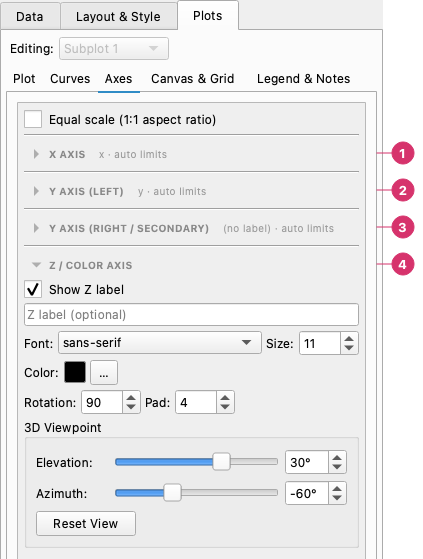

Axes¶
The Axes tab controls per-subplot axis configuration: the subplot title, axis labels, limits, scale, ticks, and the secondary Y axis. When the chart has more than one subplot, a Subplot selector at the top lets you switch between panels. Changing the selector in the Axes tab automatically syncs with the selectors in the other Plots pages.
The Axes page¶

From top to bottom (Equal scale is at the very top):
- X axis — Label (text, font, size, colour, rotation, position), limits or auto limits, the scale (linear, log, logit, inverted), tick size, direction, minor ticks, step, format, and where the axis sits.
- Y axis (left) — The same settings for the left y axis.
- Y axis (right / secondary) — The same for the secondary axis, active when a series has Y2 ticked.
Subplot title¶
The Subplot Title section is at the top of the tab and only appears when the chart has more than one panel. For a single-panel chart, the chart title is set in the Layout & Style tab.
| Control | Description |
|---|---|
| Show title | Checkbox: toggle title visibility |
| Text field | Title text for this subplot |
| Font / Size / Color | Typography |
| Pad | Distance between the title and the top of the axes (points) |
| Rot | Rotation in degrees |
| Align | center, left or right |
Axis labels¶
Each axis (X, Y, Y2) has three controls:
| Control | Description |
|---|---|
| Show label | Checkbox — hide the label without clearing the text |
| Text field | The label text (placeholder shows the column name when empty) |
| Font / Size / Color | Typography for the label |
When the text is empty the axis is titled with the names of the data series; fitted curves are left out of that default, so adding several fits does not lengthen the title (type a label if you want the fits named).
X and Y label fonts and colors are global — they apply to all subplots. Per-subplot overrides are not available for axis labels.
Math in labels¶
Titles, axis labels, legend entries and annotation text accept matplotlib's math text: put the formula between dollar signs.
| Type this | You get |
|---|---|
time $t$ (s) |
time t (s) |
$\sigma$ (MPa) |
σ (MPa) |
Decay: $y = A\,e^{-t/\tau}$ |
Decay: y = A e−t/τ |
$\sin(\omega t)$ |
sin(ωt) |
It is drawn by matplotlib itself, so nothing has to be installed. Full LaTeX typesetting is not used: commands such as \begin{align} do not work.
Axis limits¶
| Control | Description |
|---|---|
| Auto | Checkbox — let matplotlib choose limits automatically (default on) |
| Min / Max | Manual limit values, active only when Auto is off |
Uncheck Auto and set Min/Max to zoom into a specific data range without changing the data itself.
Axis scale¶
Four radio buttons set the scale for each axis:
| Scale | Description |
|---|---|
| Linear | Uniform spacing (default) |
| Log | Logarithmic spacing — requires all data > 0 |
| Logit | Logit scale for probabilities (0–1) |
| Inverted | Linear scale with the axis reversed (high values at the left/bottom) |
Tick marks¶
| Control | Description |
|---|---|
| Show ticks | Checkbox — hide tick marks and labels entirely |
| Tick size | Font size for tick labels (pt) |
| Tick direction | out (default), in, or inout |
| Minor ticks | Checkbox — show minor tick marks between major ticks |
| Rotation | Angle of tick labels in degrees (useful for long X labels) |
| Step | Force a fixed interval between major ticks (0 = automatic) |
Tick formatters¶
The Formatter dropdown on each axis controls how tick values are displayed:
| Formatter | Example output |
|---|---|
| auto | matplotlib default |
| plain | 1234567 (no scientific notation) |
| sci | 1.23 × 10⁶ |
| percent | 12.3% |
{x:.2f}, {x:.0f}, … |
any Python format string with {x}: 3.14, 3 |
%Y-%m-%d, %d/%m/%Y, %b %Y, %H:%M, … |
a date format, for an axis that shows dates |
The dropdown is editable, so you can type any format. Date formats only make sense on an axis that shows a date column; see Date and time columns. With auto, a date axis picks sensible ticks and labels by itself (years, months, days or hours, depending on the range).
Secondary Y axis (Y2)¶
Enable the secondary Y axis by ticking the Y2 checkbox on one or more series rows in Plots → Plot. The Y2 axis appears on the right side of the plot.
In the Axes tab, the Y2 section provides the same controls as the primary Y axis: label text/font/size/color, limits (auto or manual).
Z / color axis and 3D viewpoint¶
The Z / Color Axis section appears when the subplot is a 3D Surface, Heatmap, Contour or Tricontour chart. For a 3D surface it labels the vertical axis; for the other three it labels the colour bar. The other axes are folded in this picture:

- X axis — folded here; see above.
- Y axis (left) — folded here; see above.
- Y axis (right / secondary) — folded here; see above.
- Z / color axis — Show Z label, the label text and its font, size, colour, rotation and distance (Pad). For a 3D surface the 3D Viewpoint box below sets the Elevation (−90° to 90°) and the Azimuth (−180° to 180°) with a slider or a number; Reset View returns to 30° and −60°. In the preview you can also rotate the chart by dragging it.
Subplot spacing¶
When the chart has more than one subplot, two sliders in the Axes tab control the spacing between panels:
| Control | Description |
|---|---|
| H space | Vertical gap between rows of subplots (height fraction) |
| W space | Horizontal gap between columns of subplots (width fraction) |